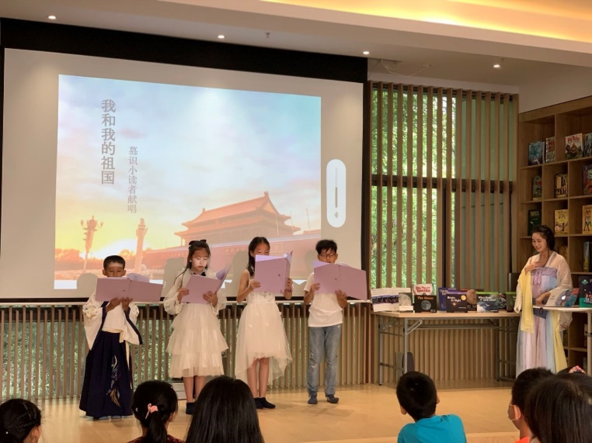
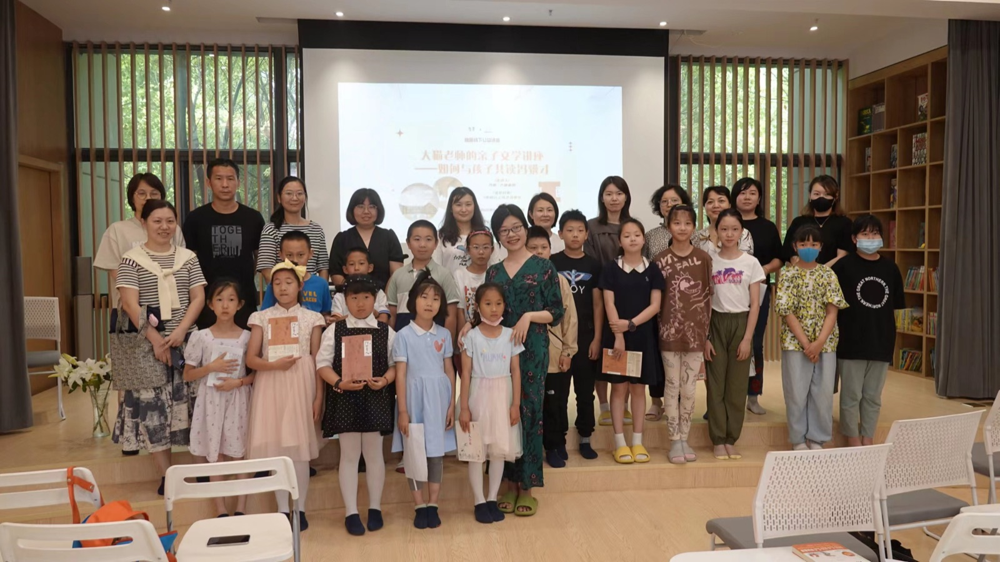
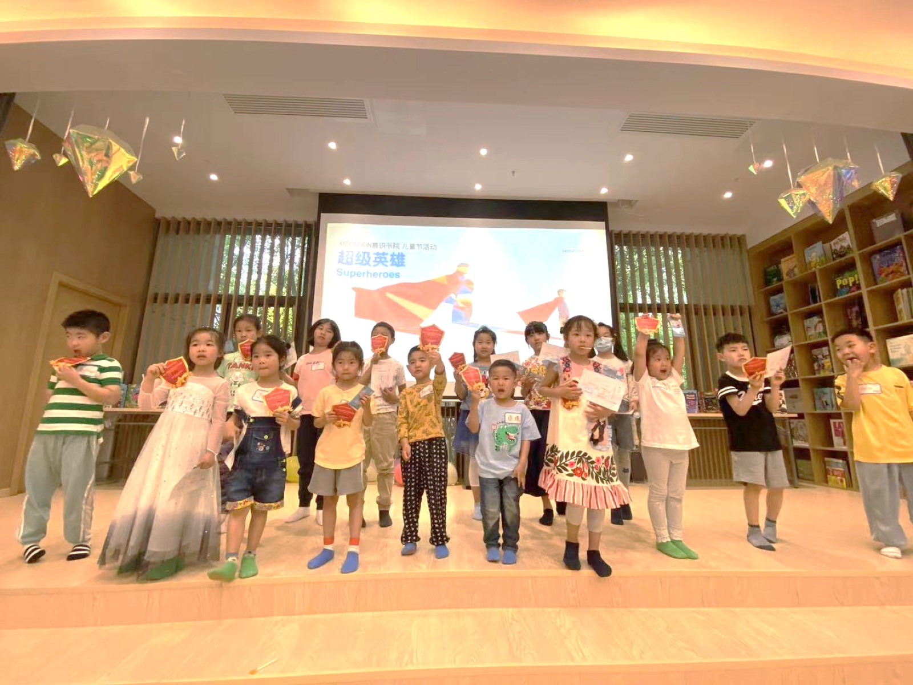
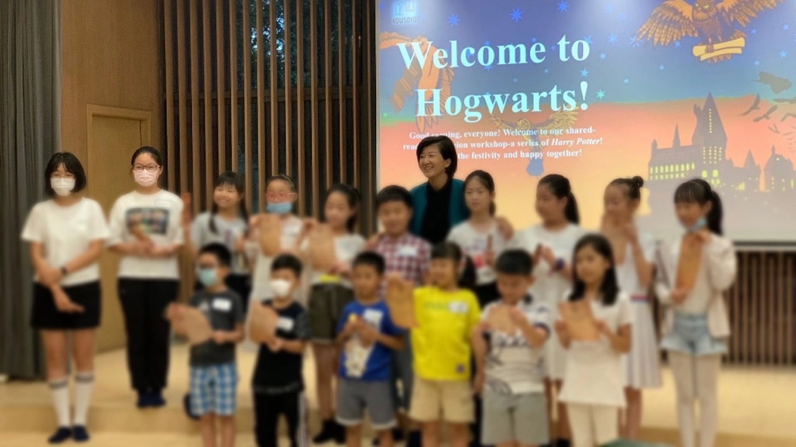
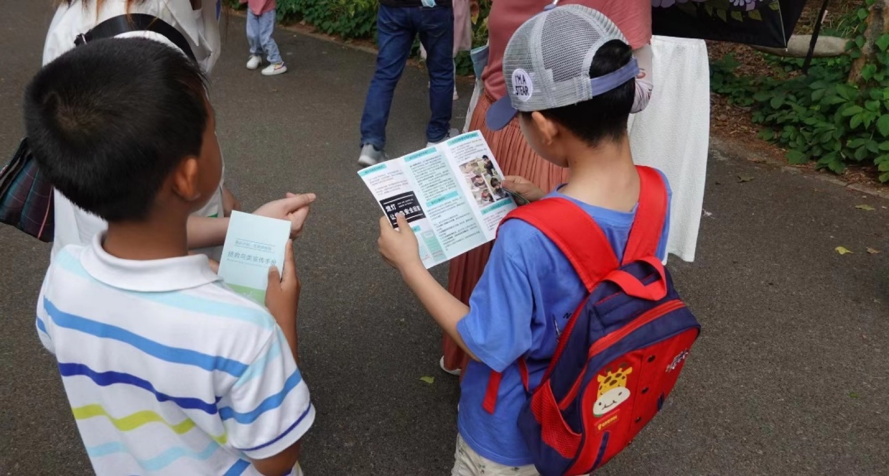

01
是图书馆
两万余册英文原版图书，涵盖自然科学、生命科学、社会科学、人文与艺术四大领域， 包括美国国家地理、DK、学乐、培生、剑桥、企鹅等数十家出版集团的经典读物。
Mouseion Reading Workshop · 2–12 岁
慕识是南京建邺区的儿童友好图书馆、儿童友好书店，也是一间以学生为中心的英语阅读工坊。 两万余册英文原版图书、八个阶段的成长路径、以作品与证据说话的测评体系， 让每个孩子在自己的节奏里，把阅读变成可以带走的能力。
一次到访约 60 分钟：孩子做一次原版阅读体验，家长与导师面谈 15 分钟，当天给出起点建议。


Who We Are
「让孩子变智慧的方法，是阅读、阅读、再阅读。」慕识是一座“不被轻易定义”的空间—— 它同时是图书馆、书店、阅读工坊和活动中心，出现在孩子课后与假期里的每一天。
01
两万余册英文原版图书，涵盖自然科学、生命科学、社会科学、人文与艺术四大领域， 包括美国国家地理、DK、学乐、培生、剑桥、企鹅等数十家出版集团的经典读物。
02
南京是首个将儿童优先发展纳入政府工作的城市，慕识正是南京为数不多的儿童友好书店： 倾听儿童的声音，看见儿童的需要，尊重儿童的想法。
03
阅读工坊（Reading Workshop）来自教育学与心理学，是以学生为中心的阅读课堂。 同一本书提取不同兴趣点，孩子在一次阅读里获得跨学科的经验。
04
自 2019 年起举办 20 余场主题书展、30 余场公益讲座、50 余场公益阅读会； 联合美国西北大学 CTD 天才少年营、极地未来等机构，把阅读延伸到真实世界。
「To learn to read is to light a fire; every syllable that is spelled out is a spark.」
学会阅读仿佛点燃一簇火，每拼出一个音节都是一朵火花。 — Victor Hugo 维克多·雨果
Four Domains
依据加德纳的多元智能理论，人的智能包含运动、逻辑、空间、内省、自然、人际、语言与音乐八种。 慕识不建议用一把尺子量所有孩子，而是依据兴趣与语言水平，为每个孩子匹配真正的“对的书”。
从天气、动植物到宇宙与生态，用实景图片与真实案例建立“观察—关联—推导”的思维习惯。
身体、健康、情绪与成长，让孩子在阅读中理解自己，也理解他人与世界的关系。
地理、历史、城市与规则，用阅读建立全球视野，也让孩子的表达有理有据。
故事、诗歌、音乐与绘画，培养语感与审美，也保护孩子对文字的长期热爱。
四色取自《慕识书院品牌指导手册》专色体系（7406C / 7480C / 279C / 1645C），用于领域与阶段的可视化区分。
The Pathway · M0–M7
年龄是建议区间；真正的起点由阅读表现、学习状态与作品样本共同决定。 每一阶段都同时推进阅读、思考与表达，成果以可观察的证据呈现。
语音与意义启蒙｜45 分钟 / 次 · 每周 2–3 次
愿意听、愿意看、愿意回应。建立书本概念，从图片、动作与语调理解意义。
Pre-A1 起步｜60 分钟 / 次 · 每周 2 次
围绕熟悉主题理解并表达，用 1–2 个完整句说清人物、事件与偏好。
Pre-A1 稳固 → A1｜90 分钟 / 次 · 每周 2 次
从拼读走向真正读懂短文：解码规则词、识别高频词，按开端—经过—结果复述。
A1 起步｜90 分钟 / 次 · 每周 2 次
理解故事与信息文的基本结构，45–60 秒口头复述与 4–6 句主题写作。
A1 稳固｜90 分钟 / 次 · 每周 2 次
比较、因果、主题与总结：比较对照、梳理因果，写成 60–90 词段落。
A1 学术过渡｜90–105 分钟 / 次
从文本中找证据解释观点，区分事实与观点，完成 80–120 词段落与小型展示。
A2｜90–105 分钟 / 次
跨文本综合信息并形成论证，组织“主张—证据—解释”，完成 120–180 词写作。
B1｜90–105 分钟 / 次
独立研究、评价信息并清晰表达，完成 180–250 词多段写作与迷你研究。
M5–M7 按每周 2 次、合计 3–3.5 小时，每单元约 6 次课测算；实际周期随版本、项目深度与孩子达标速度调整。
Capability
孩子每升一级，不只是读更难的文本，而是理解、思考、表达与自主学习同步变强。 关键证据永远指向同一个问题：换一篇新的文本，他还会不会用？
01
看图理解 → 解码短句 → 主旨与结构 → 跨文本与多来源综合。
关键证据：陌生文本理解率、复述质量、图文整合、推断与总结。
02
观察与分类 → 顺序与因果 → 事实 / 观点 → 主张—证据—解释 → 评价证据。
关键证据：能否说明“我为什么这样想”、证据是否相关、结论是否考虑限制。
03
词语块 → 完整句 → 连贯复述 → 段落写作 → 多段论证与演讲。
关键证据：信息是否完整、结构是否清楚、语言是否准确、能否按反馈修订。
04
跟随参与 → 策略使用 → 批注与笔记 → 计划、监控、复盘 → 独立研究。
关键证据：面对新文本会不会选策略、遇到不懂会不会澄清、能否迁移到新任务。
Assessment
采用“入课—过程—阶段—升阶”四个时间点，让每一份证据都能转化为教学行动。 年龄到了，不代表必须升阶。
导师面谈、陌生文本、口语 / 拼读与写作样本 —— 决定起点与支持方式。
每课观察、每单元作品、策略使用与纠错 —— 及时补强，不等到期末。
前后样本对比、阅读测评、口头 / 书面项目 —— 看见真正的能力增长。
连续两次达标 + 作品证据 + 出勤与完成情况 —— 决定升阶、延长或个性化加速。
Reading Workshop
「一种以学生为中心的方法来阅读。读者以自己的选择来阅读，以自己的速度来阅读， 并与人讨论、分享阅读心得、聚焦一些阅读能力或者重要概念。」—— P. Hagerty
与家人一起，从声音进入故事，建立语感与专注。
与老师一起，示范并内化策略：预测、推断、区分整体与细节。
与伙伴一起，讨论、辩论、把理解说出来，接受不同的解释。
独自选书、独自读完，在合适的难度里获得成就感。

视觉、听觉与动觉（VAK）充分融入课堂：小组讨论、展示、活动与游戏， 让不同的学习风格都能找到入口。好的导师能够就一个概念打开多扇窗户。

英文烘焙营、美国国家地理科学主题探索、三十国环球阅读之旅、AI 设计课…… 一门阅读课，也可以有真实的饼干香气和自己的想法。
The Space
空间由反几建筑设计事务所（FAN AF）操刀，设计概念溯源至亚历山大里亚城创建的 MOUSEION 博学园，以扇贝抽象形态的曲线语言，让每一间阅读室既独立又联动。
随着年级上升逐级点亮书塔阅读范围，直至毕业。进度是看得见的。
阅读室、在线计算机室、展示舞台、多功能室，满足阅读与文化活动需求。
2020 国际设计大奖·艾鼎奖；2021 WAF / INSIDE 世界室内设计节、Dezeen Awards 入围。
广泛获得荣誉的儿童友好空间，受到高度赞誉的国际儿童友好示范性图书馆。
Events & Community
主题书展、公益讲座、双语诗会、读者剧场、亲子共读日、假期营队—— 让书里的世界，真的走到孩子面前。

把一本书读成一整个下午。

阅读、角色扮演与主题闯关。

用表演的方式讲故事，像故事里的人物一样讲话。

与街道、社区一起，做公共阅读空间合作的范例。

环球阅读之旅、科学主题营、亲子科考营。
← 左右滑动查看更多活动 →
Home Partnership
家庭不需要复制课堂；最有价值的是保持阅读发生，并让孩子有机会把理解说出来。
| 年龄 | 建议频率 | 可以这样做 | 尽量避免 |
|---|---|---|---|
| 2–3 岁 | 每天 10 分钟重复共读 | 指认、动作、停顿等待回应 | 测试单词、要求坐满一小时 |
| 4–6 岁 | 每周 2–4 次短时主题复现 | 让孩子讲画面、做角色互动 | 逐句翻译、过量抄写 |
| 6–9 岁 | 独立阅读 + 每周一次复述 / 摘要 | 追问顺序、原因、证据 | 只看速度和做题正确率 |
| 9–12 岁 | 主题阅读 + 每周一次观点讨论 | 讨论来源、证据与不同解释 | 把家长观点当标准答案 |
FAQ
把外部量尺当作坐标，而不是把孩子变成一串分数。
不等于。语言等级描述综合能力，考试还受题型熟悉度、时间管理与全技能表现影响。报名考试前应另做全技能评估。
不是。它主要反映英文文本难度与读者理解能力，不能替代兴趣、背景知识、思辨与表达。合适的挑战才最有效。
这一阶段优先建立声音—意义连接、共读兴趣、互动习惯和拼读准备。先让语言自然生长，再谈考试表现。
目前按每周 2 次、合计 3–3.5 小时，每单元约 6 次课规划；若每阶 10 单元，约 30 教学周。最终以实际单元数、项目深度和达标速度为准。
看四类证据：读得懂、说得清、写得出、换一篇也会用。建议保存前后两次录音、阅读回答和代表写作。
不一定。年龄决定内容与课堂组织是否适切；阅读能力、语言状态、心理准备与独立性共同决定起点。跳级或加速必须由陌生文本和作品证据支持。
First Visit
读一读、学一学、走一走。孩子做一次原版阅读体验，家长与导师面谈 15 分钟， 当天给出起点建议与一份阅读计划草案。

{kind=link}
{kind=link}
{kind=link}